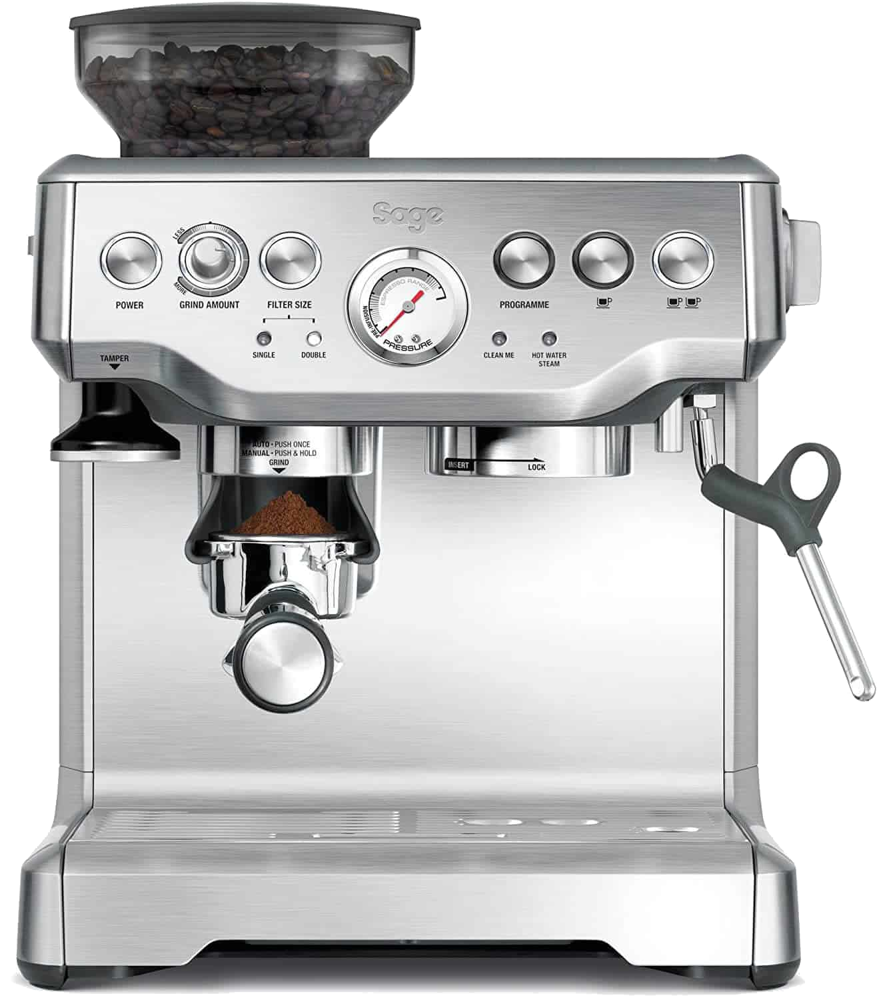
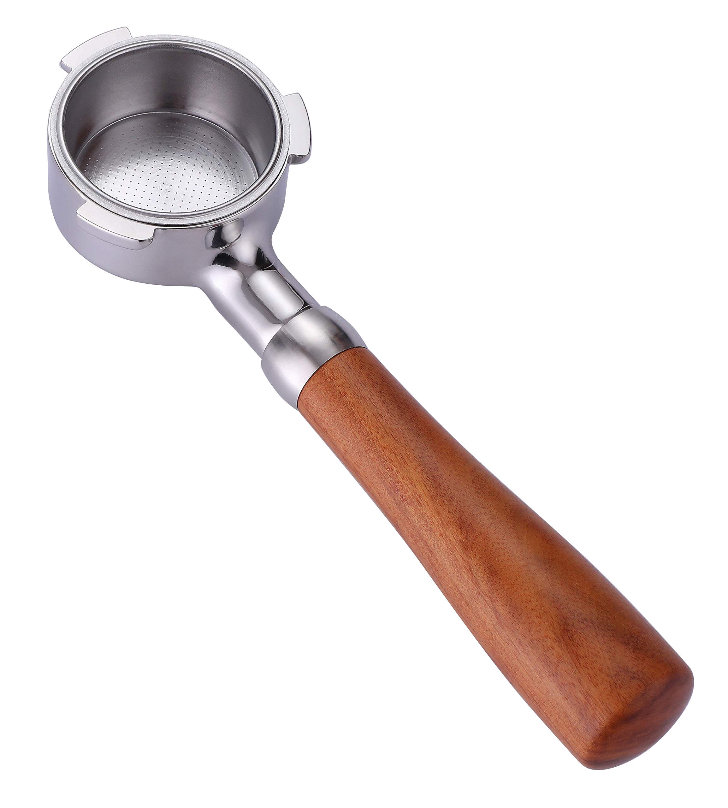
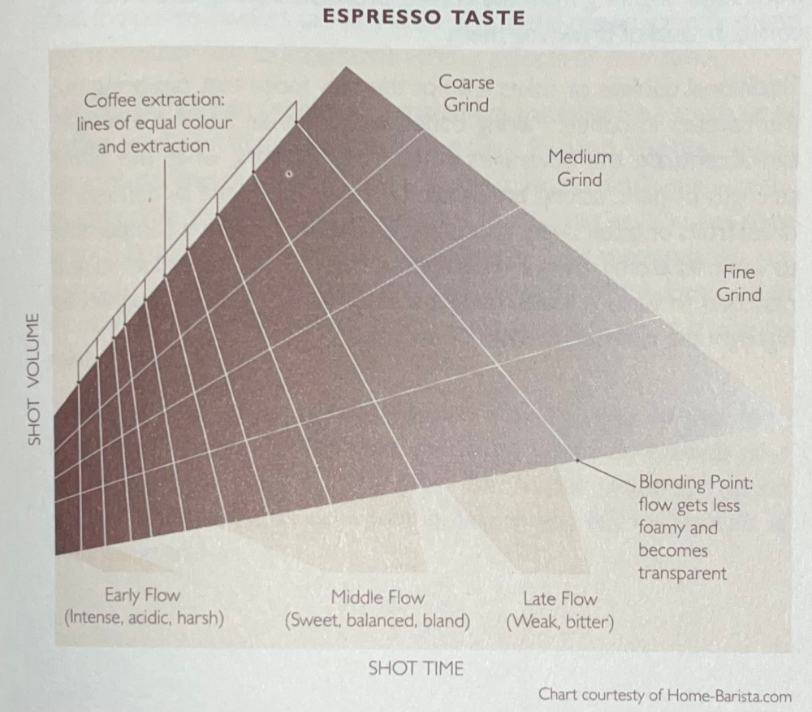

Coffee
2024-02-27 : 2024-02-28

I should be clear: I do not know how to make good coffee. With that out of the way, here is why and how I have been trying to.
Why Coffee?
I love to tinker. Frequently I will look at my room underwhelmed: draw up a redesign, shift my bed, drill holes through my desk, reposition plants and shelves until, at least for the moment, I am satisfied. The aim is to improve things; that's not a unique goal but it's why I feel so fondly for coffee.
Months ago I was inducted into the coffee world by a Tom Scott video. In it, Tom is joined by ex-professional barista James Hoffman who imparts his knowledge (and more importantly enthusiasm) onto Tom and the audience - Me! While watching I couldn't help but wonder…
Why does this man like coffee so much?
His love seemed untoward. Too trivial a thing to be engrossed so much by…
Coffee is just a drink! I thought.
That was Tom's predisposition too. But through the process I think his view was swung. That sparked my interest.
I learned that coffee has a complex profile, like the design of a room. Elements within it can complement or conflict, these subject to a skill that I can continuously improve. Coffee I can tinker with, ruin or perfect. And at the end of the process my reward is that it can be shared.
What Coffee?
How To Make Coffee, by Lani Kingston, is my source on the subject.
Kingston describes her book as:
An explanation of the scientific principles behind the art of coffee making, with clear step-by-step instructions explaining how all the major coffee-making methods work.
It is seriously scientific and thorough. The understanding of coffee I extracted from it is not, but still better than before. I can now tell you to make coffee, one should:
- Grow a tree of the species Arabica or Canephora.
- Gather the fruits it bears: your unroasted green coffee beans.
- Roast the beans to some temperature
- Then to some coarseness grind some mass of them.
- Steep the grind in water for some length of time.
- Or push through it water of some mass under some pressure for again some length of time. In the case of espresso.
What is espresso?
Espresso is what's made when water is forced through coffee grounds under a high pressure. In this process, the resultant coffee is more concentrated and, as high pressures cause fats in the coffee to emulsify, a golden foam crema is produced on the surface of the drink.
If that process doesn't make sense, it's because it's incomplete. There are a thousand ways to make the final cup of coffee and though unless you live in the coffee belt it is unlikely you'll need to takes steps 1 and 2 or even 3, making coffee still involves a great deal of ambiguity.
How Coffee?
I use an espresso machine.

How to Make Coffee is a fantastic resource, though its technical information on espresso is limited. For that I go back to James Hoffman. In particular, his seven part series on dialing in espresso.
What's dialing in?
Dialing in means making incremental changes to the variables involved in espresso.
Here's how that process unfolded for me:
A PortafilterI started with 7g of coffee grounds a single shot which my espresso machine extracted in 10s, producing 30g of water. Inspecting the portafilter afterwards, the grounds had formed a water-logged mush. This is a bad sign! The coffee was frankly not-good; notably, it was sour. What had happened is called under-extraction: not enough soluble coffee compounds had dissolved in the water.

I therefore needed to grind finer, to increase the surface area of the grounds and thus the rate at which they dissolve, or grind more to increase the pressure, decreasing the rate of the flow of water, increasing extraction. I did both: grinding finer and more in varying measures until I reached better coffee.
I now grind 11g of coffee into my single-shot-sized portafilter, at a coarseness of (forgive my arbitrary units) 5 on my Sage Barista express. This produces 30g of coffee in 20 seconds, and tastes remarkably better than it used to.
That's been my coffee experience so far. There is more (so much more!)… a good example are the beans you buy… but with that and the rest I haven't had time yet to experiment.
All in all here are my two cents:
- Use scales when measuring masses
- Record your readings
- Have fun
- And if you want to be good, take your coffee advice from someone other than me.